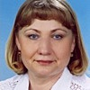

Дошкольное отделение школы № 933
Подробное описание Школы № 933 — в соответствующем разделе.
- Харьковская улица, 3А
- Харьковская улица, 3к5
- Булатниковский проезд, 14А
- Харьковская улица, 1к1А
- Булатниковский проезд, 10А
Воспитатели
Воспитатели, которых чаще всего благодарят родители (отзывы и профили сотрудников взяты с официального сайта школы):|

Воспитатель
Родионова Татьяна Михайловна
2 благодарности |
Логопед
Галибина Елена Юрьевна
2 благодарности |
Воспитатель
Янакаева Ольга Ивановна
1 благодарность |
Отзывы
Данные собраны c официального сайта школы и через форму для отзывов.
Хочу выразить благодарность коллективу д/с Берёзка (№ 834) и особенно коллективу логопедической группы № 6. Благодаря высокому профессионализму логопеда Галипиной Татьяны Юрьевны, воспитателей Родионовой Татьяны Михайловны, Янакаевой
Ольги Ивановны, наш ребёнок Жанабергенов Темирлан смог в этом году пойти в 1 класс общеобразовательной школы. Их терпение, настойчивость, последовательность в процессе исправления речевых нарушений невозможно переоценить. Практически материнскую заботу получили наши дети от пом. воспитателя Гаустян С.Ш. ( наша тётя Соня - так называют её дети).
Спасибо администрации ГБОУ СШ 933 за то, что понимают необходимость логопедических групп и сохранили их в саду- ведь это так непросто в наше кризисное время.
Желаю всему коллективу ГБОУ СШ 933 настойчивости, терпения в благородном деле обучения и становления подрастающего поколения. Поздравляю всех с наступающим праздником "ДЕНЬ ЗНАНИЙ".
Левина С.А.
Ольги Ивановны, наш ребёнок Жанабергенов Темирлан смог в этом году пойти в 1 класс общеобразовательной школы. Их терпение, настойчивость, последовательность в процессе исправления речевых нарушений невозможно переоценить. Практически материнскую заботу получили наши дети от пом. воспитателя Гаустян С.Ш. ( наша тётя Соня - так называют её дети).
Спасибо администрации ГБОУ СШ 933 за то, что понимают необходимость логопедических групп и сохранили их в саду- ведь это так непросто в наше кризисное время.
Желаю всему коллективу ГБОУ СШ 933 настойчивости, терпения в благородном деле обучения и становления подрастающего поколения. Поздравляю всех с наступающим праздником "ДЕНЬ ЗНАНИЙ".
Левина С.А.
Моя дочь, Соловьева Дарья посещает дошкольное образование № 933. Ходит в старшую логопедическую группу "калинка" №6 с тяжелыми нарушениями речи. Замечательные Воспитатели,Родионова Татьяна Михайловна и Янакева Ольга Ивановна, по настоящему любящие детей и свой не легкий труд, окружают заботой ,проводят интересные занятия, стараясь занять детей различными видами деятельности. Познают окружающий мир, рисуют, великолепные поделки с ними мастерят. Дети с большой радостью показывают родителям поделки.Дочь моя без умолку, с восторгом рассказывает пройденные темы в детском саду. Для моего ребенка в действительности детский сад второй дом, где царят любовь,забота, уют.С младшим воспитателем Соней Шигеновной Галустян,Даша торопится поделиться секретиками,детки все ее любят, доверяют детские секретики.Чистота идеальная в группе , вовремя накормлены детки,наша няня, любимая, создает уют! Отдельное спасибо нашему логопеду Елене Юрьевне Галибиной, благодаря ее труду мы во многом побороли логопедические проблемы с речью. Она самый умный и грамотный педагог! Мы в старшей группе, а дети многие начали читать по слогам.Елена Юрьевна любит детей и живет детсадовской жизнью вместе с детьми.Нашей семье повезло, что наша дочка попала в группу №6. Таких грамотных педагогов осталось мало. Ценим, любим , дорожим!!! С большой любовью и благодарностью семья Соловьевой Даше!
Если вы нашли ошибку или неточность, пожалуйста, сообщите нам об этом.
Ученик, выпускник или родитель? Оставьте отзыв о детском саде.